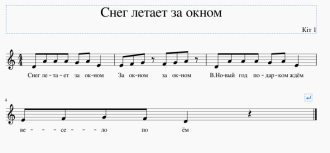
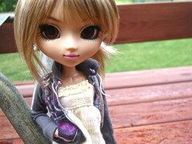

Снег летает за окномЗа окном, за окном.В Новый год подарков ждём,Весело поём.
Я слишком долго спала,Я слишком долго ждала.Только сейчас я смоглаПросто себе разрешить,Просто познать эту суть,Просто пройти этот путь,
Сколько песен,Сколько света,Сколько красок!..Ну, зачем так много мне одной?Моё сердце распахнулось настежь,
Бежит река, в тумане тает,Бежит она, меня дразня.Ах, кавалеров мне вполне хватает.Но нет любви хорошей у меня.

Бархатный голос звучит мягко, полнозвучно, без напряжения. Чарующее звучание бархатного голоса всем безусловно приятно, привлекает внимание.
Самые важные, те, что так дороги,Чёрно-белые.Вроде бы кажется, а сколько утеклоВоды-времени.Самые главные, те, что не вытереть
Студёный вихрь, колкийСевера крайнегоУкутает надолгоДо весны в снега
А может просто снегом стать?А может просто снегом стать?
Субтон - это мягкий голос, которым пользуются исполнители и исполнительницы песен, чтобы передать чувства нежности, тепла, заботы.
Забыть невозможно касаний твоих,С тобою делила весь мир на двоих.Забыть и уйти, и всё отпустить -Просто порвать между нами нить.
Елочка, ёлка -
Лесной аромат.
Очень ей нужен
Красивый наряд.
Пусть эта ёлочка
В праздничный час
Каждой иголочкой
Часто слушатели песен настолько влюбляются в своих кумиров, что готовы слушать песни своих любимых исполнителей бесконечно.
Данная запись имеет целью представить порядок, который стал известен жителю Океании - Киту 1.
Был обычнный серый питерский вечер,Я пошёл бродить в дурном настроеньи,Только вижу — вдруг идёт мне навстречуТо ли девочка, а то ли виденье.
Я гадала при лунеНа одно из двух имён.Кто-то в небе пишет мне,Что в меня давно влюблён.Может, это миражи,Может, сказка, может, быль.
Ничего никому не сказав,Ты уйдешь далеко-далеко.Я тебя отыщу по следам, по словам,Что текут непослушной рекой...Постой!...
- В настоящий момент я имею хороший заработок в интернете.- В интернете?- Да.- Это что такое? У меня нет.- Вы хакер?
Если тебе одиноко взгрустнется,Если в твой дом постучится беда,Если судьба от тебя отвернется,Песенку эту припомни тогда.
Видеть тебя всегдаХочется мне сейчас,Мысли твои читатьВ каждом движенье глаз,А ещё иногдаСлышать дыханье так,
Я в твоих руках,Как маленький котёнок,Можешь за меня,Вершить мою судьбу,Или просто гладить,Или просто слушатьМеня,А я -